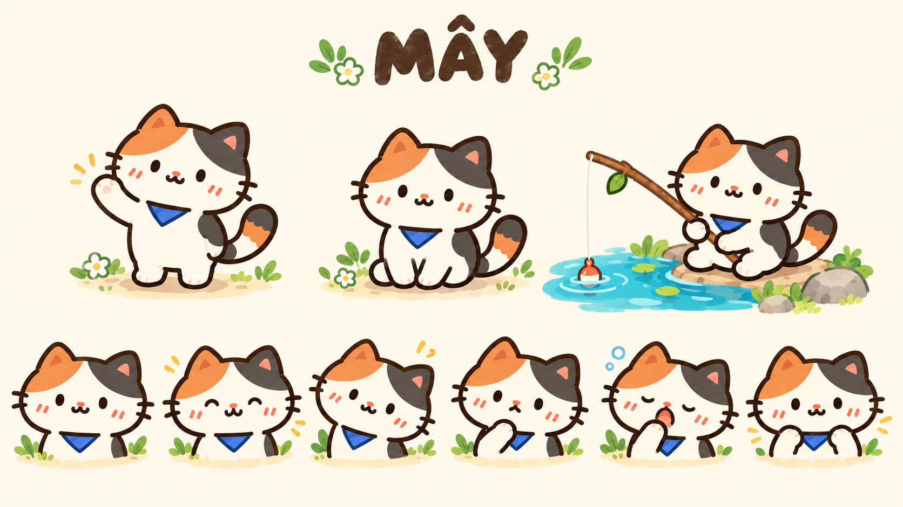

TẠO HÌNH
Nhỏ thôi, nhận ra ngay.
Mắt chấm nâu nhỏ, hai nét má xiên, khăn xanh tam giác. Lông tam thể kem – cam – xám đậm, viền nâu mềm và chuyển sắc nhẹ.
HALLO, DU! CHÀO MỪNG VỀ ĐẢO
Chọn một nơi trên đảo.
Mây sẽ cùng bạn đi một đoạn.
Vuốt ngang để ngắm đảo · hoặc chọn địa điểm bên dưới
CẢM GIÁC CỦA THẾ GIỚI
Vừa mở trang là gặp Mây trong nơi ở của bé. Đường mòn, mái nhà và bến nước dẫn người học đến từng hoạt động. Một thế giới có thể khám phá, với nhịp học vừa sức.
01 / NHÂN VẬT
Hiền, tò mò, hơi lười.
Và rất mê cá.

TẠO HÌNH
Mắt chấm nâu nhỏ, hai nét má xiên, khăn xanh tam giác. Lông tam thể kem – cam – xám đậm, viền nâu mềm và chuyển sắc nhẹ.
TÍNH CÁCH & GIỌNG NÓI
Mây thích nghịch nước, tò mò với đồ nhặt được, đôi lúc ngủ gật. Khi người học sai, bé nghiêng đầu và cùng thử lại.
“Mình thử thêm một lần nhé.”„Versuchen wir es noch einmal.“
HỒ SƠ NGƯỜI HỌC
Tên gọi, mục tiêu, lịch ôn, các vùng đã ghé và kỷ niệm trên bè. Tiến độ học và bộ sưu tập có hai cách ghi nhận riêng.
Tư thế mới là concept để duyệt; ảnh gốc vẫn là chuẩn nhận diện.
#FFF6E6#29B8BD#9FC55A#4E6BC6#D7954F#49312002 / THẾ GIỚI
Sáu vùng được minh họa.
Hải trình dài hạn gồm 20 vùng.
Vuốt để xem bản đồ · chọn vùng trong danh sách bên dưới
03 / TRẢI NGHIỆM HỌC
Bản tương tác minh họa một câu hỏi.
Không ghi vào tiến độ học thật.
KHI ĐANG HỌC
Chuyển động nhỏ, nền yên, âm thanh cảnh nhường cho bài nghe. Hộp câu hỏi rõ ràng ở một vị trí ổn định.
KHI CHƯA ĐÚNG
Hiện gợi ý, đáp án và lý do. Ghi nhận lần sửa có trợ giúp, đưa từ cần ôn quay lại sau; Mây luôn động viên.
KHI HOÀN THÀNH
Tổng kết kết quả trước, rồi mới tới đoạn câu cá hoặc vật trang trí. Có thể bỏ qua hoạt cảnh và quay lại học.